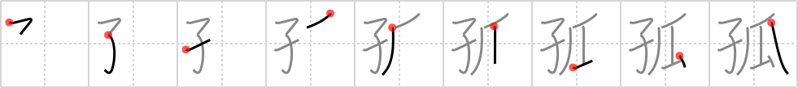

孤
← →
orphan

Reading:
On-Yomi: コ
Heisig story:
Child . . . melon.
Koohii stories:
1) [jackhuddleston] 2-6-2008(272): An orphan will never know the joys on sucking on his mother's melons……..
2) [Raichu] 27-12-2008(95): Unlike the celebrated story of Momotaro the peach boy, no one knows the story of the melon boy who was left an orphan.
3) [Crowfoot] 12-4-2008(60): This is the happier version of Oliver Twist. Here the orphaned children are served fresh melon with every meal. "Please, sir, may I have some more melon?" "Why, of course, help yourself!".
4) [richcoop] 21-8-2008(25): The orphan CHILD popped out of the MELON.
5) [mezbup] 7-7-2009(12): Adopt an orphan child today and receive a free melon.